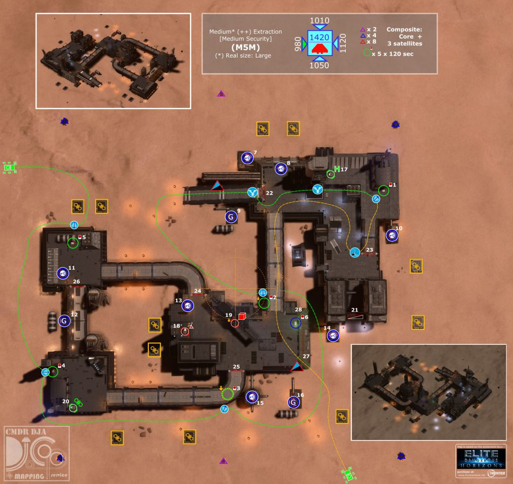

Rawat Depot is a Large Extraction (Medium Security) surface settlement on Coni A 2.
This settlement would be otherwise unremarkable, except for a message hidden in its data banks:
SCANNED MESSAGE
Corporate Data Log: It’s proof; all the evidence we need that we’re not alone in the galaxy. The corporation has been hiding it all this time. For years their deep-space exploration vessels have been picking up anomalous comms and heat signatures that definitely aren’t human. Hours of recordings, enough to fill an entire library, and it’s been hidden all this time. But I’ve got it now. It’s in my possession as we speak and I’m going to blow the lid off this whole thing. if my Mkll can make it to the next station the whole galaxy will know the truth. Just a second… what’s that in the distance? Looks like a… ship. But I’ve never seen anything like it bef…
The message can be obtained by scanning each of the settlement’s active data points in order, with no more than a two minute delay between each scan.

DjaCoP Mapping Service